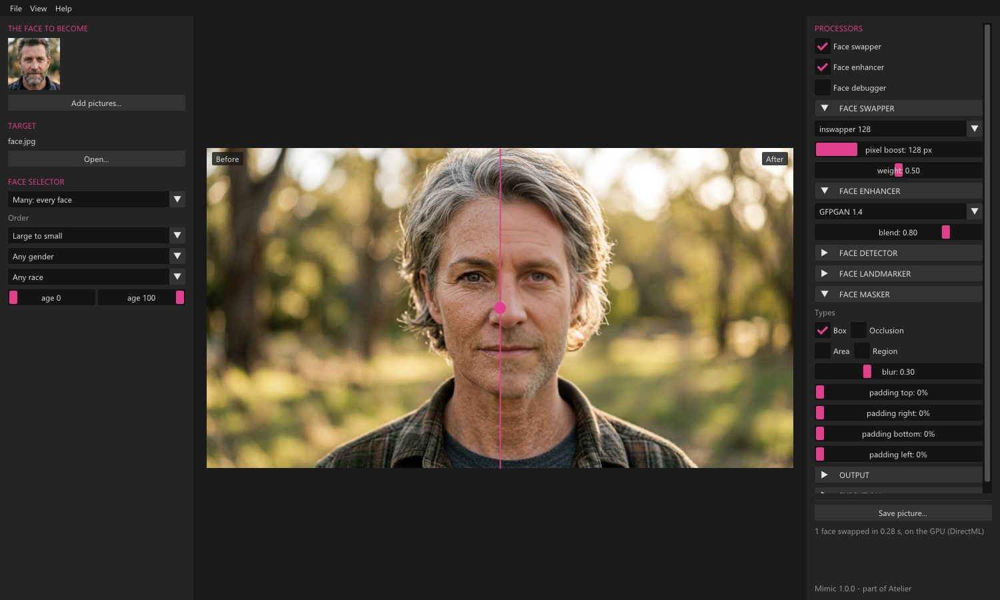

The command line
mimic-cli -s face.jpg -t video.mp4 takes FaceFusion's own options: --face-swapper-model hyperswap_1a_256, --face-enhancer-model codeformer, --face-mask-types box occlusion, --face-selector-mode reference.
Only use faces you have the right to use, and say when a picture or video has been changed.
Minimum requirements
| System | Windows 10 or 11, 64-bit |
|---|---|
| Processor | any 64-bit processor |
| Memory | 8 GB RAM |
| Graphics | a DirectX 12 card (NVIDIA, AMD or Intel) for speed, or the CPU, slower |
| Disk | 50 MB for the app, up to 3 GB for the models it fetches as you use them |
| Other | ffmpeg for videos |